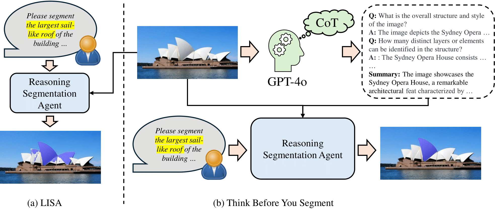
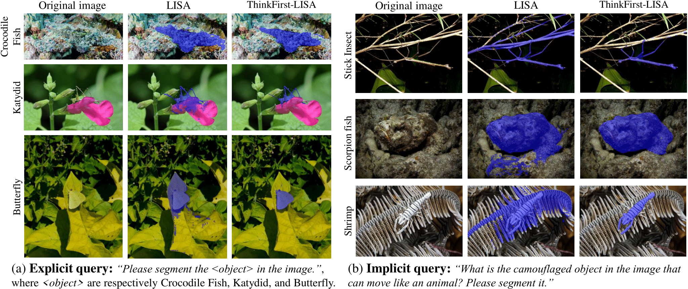
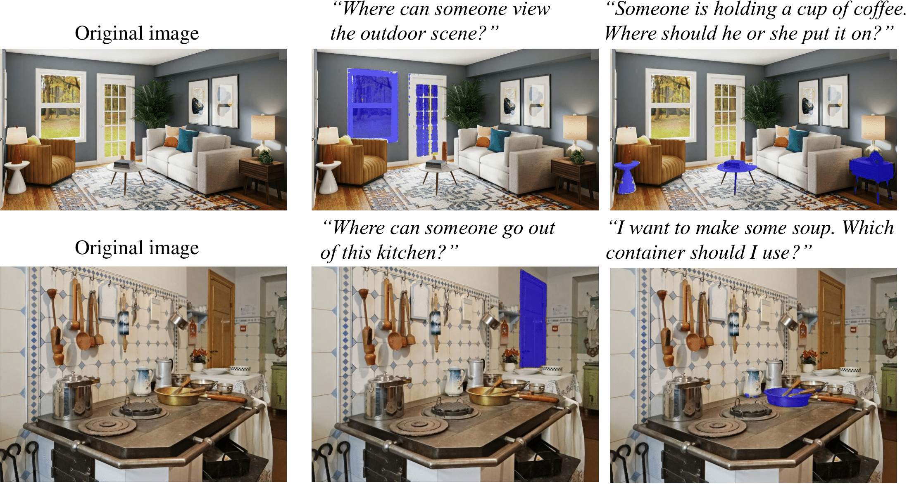
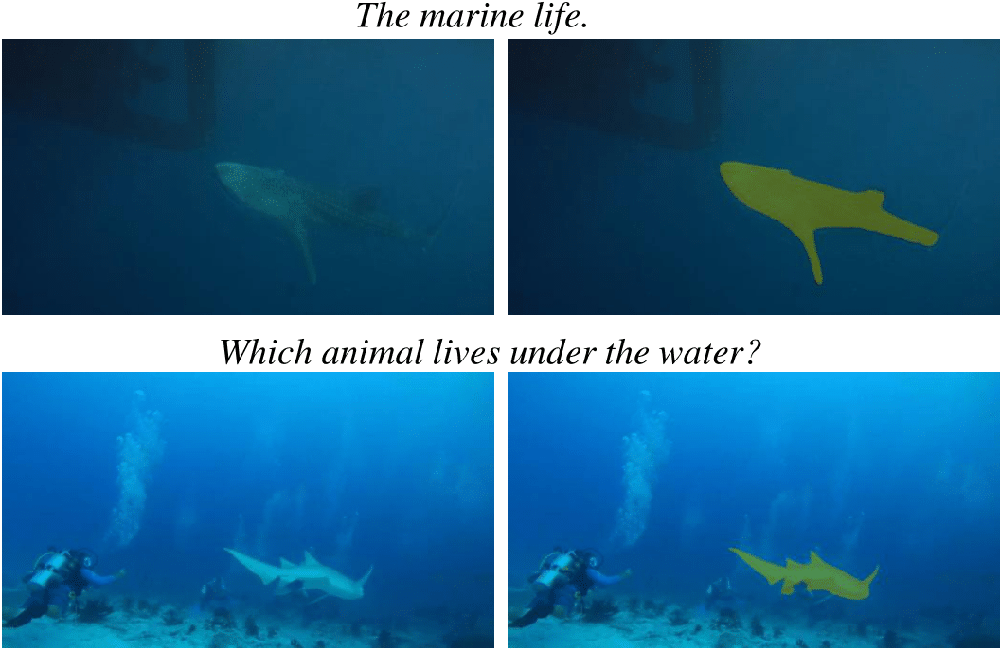
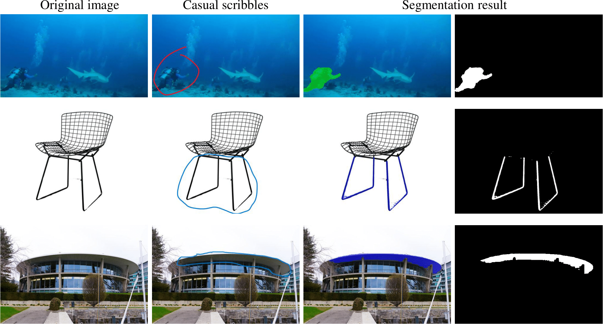
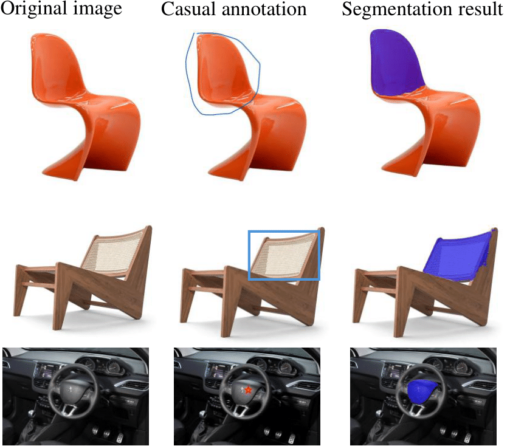
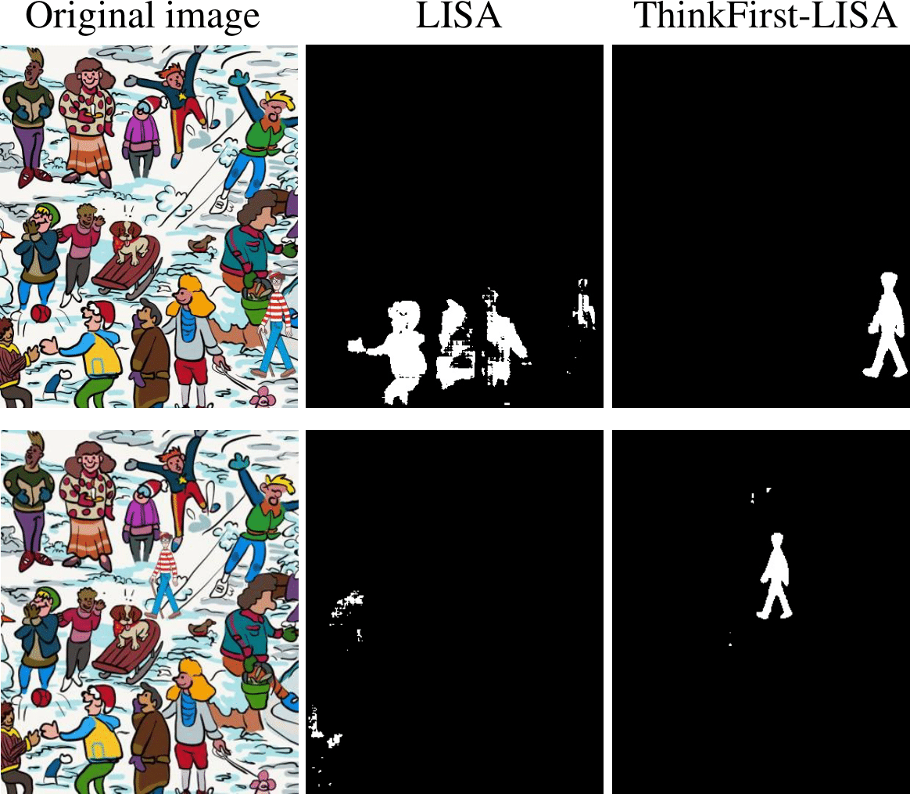

We propose ThinkFirst, a novel Chain-of-Thought (CoT) reasoning segmentation framework that generates an accurate object mask given a text prompt, implicit or explict with complex details alike, after autonomously Thinking First with GPT-4o’s CoT. Our zero- shot-CoT framework can handle difficult scenarios such as implicit queries, camouflaged objects, out-of-domain objects with easy control.
Abstract
Reasoning segmentation is a challenging vision-language task that aims to output the segmentation mask with respect to a complex, implicit, and even non-visual query text. Previous works incorporated multimodal Large Language Models (MLLMs) with segmentation models to approach the difficult problem. However, their segmentation quality often falls short in complex cases, particularly when dealing with out-of-domain objects with intricate structures, blurry boundaries, occlusions, or high similarity with surroundings. In this paper, we introduce ThinkFirst, a training-free reasoning segmentation framework that leverages GPT's chain of thought to address these challenging cases. Our approach allows GPT-4o or other powerful MLLMs to generate a detailed, chain-of-thought description of an image. This summarized description is then passed to a language-instructed segmentation assistant to aid the segmentation process. Our framework allows users to easily interact with the segmentation agent using multimodal inputs, such as easy text and image scribbles, for successive refinement or communication. We evaluate the performance of ThinkFirst on diverse objects. Extensive experiments show that, this zero-shot-CoT approach significantly improves the vanilla reasoning segmentation agent, both qualitatively and quantitatively, while being less sensitive or critical to user-supplied prompts after Thinking First.
Reasoning Segmentation results
Camouflaged Objects
ThinkFirst showcases state-of-the-art performance in challenging cases, such as camouflaged images, where objects are "seamlessly" embedded into their surroundings.
Indoor Scene
In indoor scenes, ThinkFirst demonstrates outstanding reasoning capability for very implicit and complicated queries.
Underwater examples
It can also be used to tackle underwater images, where objects are captured under severe blurry and color shift condition.
Casual Scribble-based Segmentation
ThinkFirst supports various types of easy image-based controls, such as casual scribbles, bounding boxes, points, etc.
Where's Waldo?
ThinkFirst can be used to solve a classic game called "Where's Waldo?", pushing a reasoning segmentation model under testing to limits when we humans may not be able to spot Waldo without effort.
Explore more results in our paper!
Citation
Acknowledgements
The website template was borrowed from Michaël Gharbi.